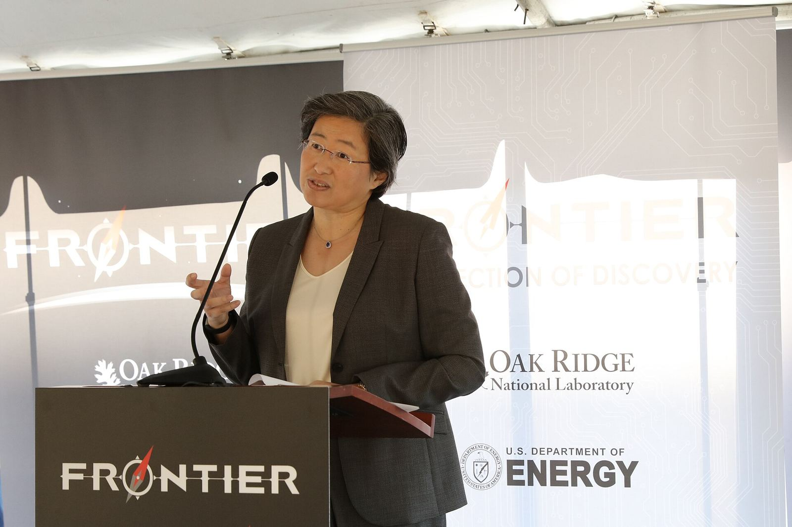

OpenAI 介绍用其模型改进芯片设计：称与 AMD 合作，在旗舰 GPU IP 上相对已经过充分优化的基线最高取得 14% 的 PPA 改进，部分改动已进入送交制造的设计；并称在自研推理芯片 Jalapeño 上，模型提出的改动使向量单元与矩阵单元标准单元面积分别减少约 13% 与 10%，这些优化已在硅片验证中得到证实


OpenAI 于 2026 年 11 月 18 日发布文章《Advancing chip design with OpenAI models》，介绍如何用其模型改进芯片设计。文章一开始写道，OpenAI 的模型正在迅速改进驱动人工智能的芯片；并回顾称，公司曾在 8 月分享工程师如何用前沿模型加速其首款自研推理芯片 Jalapeño 的开发。本稿主要转述其中关于 Jalapeño 计算模块、与 AMD 的合作，以及开放指令集 RISC-V 评测的表述。
我们与 AMD 合作改进 PPA，并在旗舰 GPU IP 上，相对已经过充分优化的基线，最高看到 14% 的改进。
关于 Jalapeño，文章称团队从 2025 年初开始使用 GPT-o3 mini 协助设计。在矩阵单元中，一款乘法器的重新设计在综合中约减少 15% 的单元面积，同时把延迟从两个时钟周期降到一个周期；另一款加法器的重新设计约减少 15% 的单元面积，并保持原来的两周期延迟。文章称，就更广的 Jalapeño 设计工作而言，团队估计模型提出的改动使向量单元的标准单元面积减少约 13%，使矩阵单元减少约 10%；并写明这些优化已在 Jalapeño 的硅片验证（silicon bring-up）中得到证实。
关于与 AMD 的合作，OpenAI 写道：双方合作改进功耗、性能与面积（PPA），并在旗舰 GPU IP 上，相对已经过充分优化的基线，最高看到 14% 的改进。文章称，其模型通过改写描述芯片电路的代码（SystemVerilog RTL）找出进一步改进；并称这相当于在不到 5 个月里取得大约一年的进展。文章还写明，AMD 已把其中一些改动纳入近期送交制造的设计，并把其他改动加入生产设计文件，供后续版本使用。模型使用 Synopsys 工具核验每次改写是否保持该模块的行为，并评估功耗、性能与面积的取舍。OpenAI 并称，AMD 还验证了：在其即将推出的下一代旗舰 CPU 的关键模块上，由该模型写出的设计带来了个位数百分比的 PPA 提升。
为衡量不同代模型在芯片设计任务上的进展，OpenAI 在两款开源 32 位 RISC-V 核心上做了测试：面向现场可编程门阵列（FPGA）的紧凑核心 PicoRV32，以及 OpenTitan 安全芯片所使用的嵌入式处理器 Ibex。文章称，在每轮约 112,000 个 token 的可比预算下，GPT-6.2 Astra 在两款核心上都取得最高平均分；完整评测包括两项任务、两款核心和全部 token 预算，共 9,881 次计分运行。展望方面，OpenAI 写道，为了把模型开发建立在可信的评测方之上，并拓宽所覆盖的设计挑战，公司正与 Synopsys 合作训练 GPT-Synopsys，使其能像专业芯片设计师那样使用 Synopsys 的电子设计自动化（EDA）工具。
摘记，不是官方媒体。PPA 改进幅度、面积与延迟数字、评测次数以及与 AMD、Synopsys 的合作表述均转述 OpenAI 11 月 18 日文章。文中“最高 14%”与“个位数百分比”是该公司对其合作结果的表述，不是本站的独立测量。